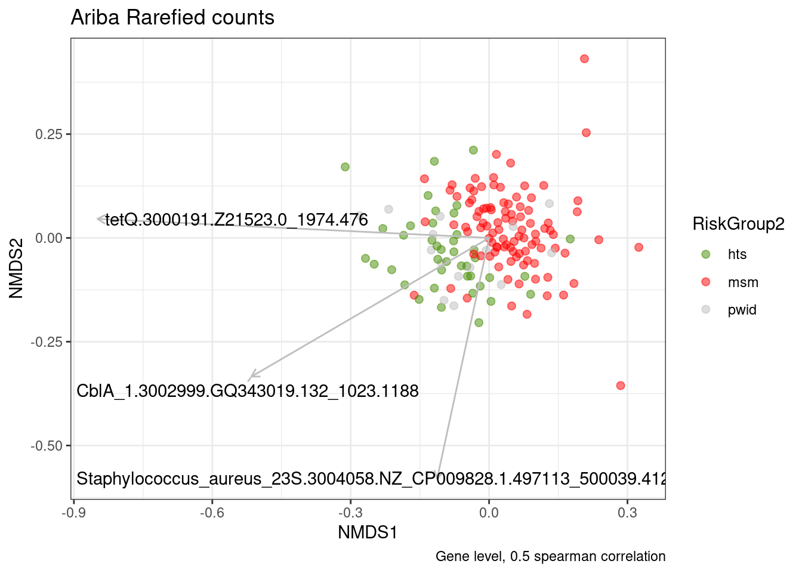
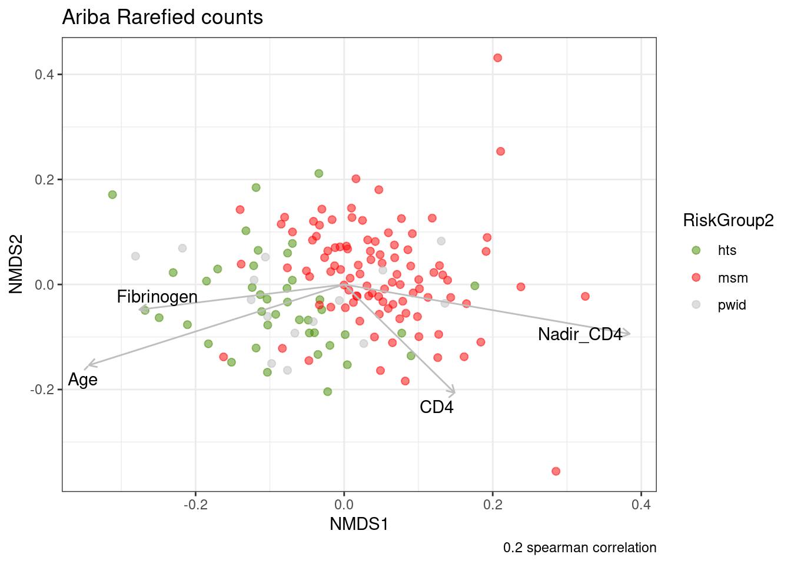
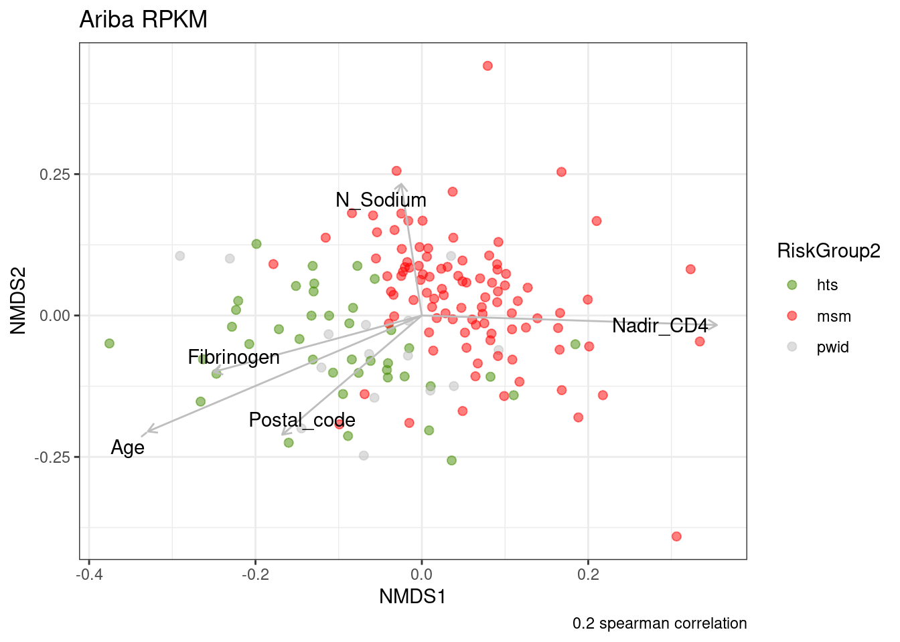
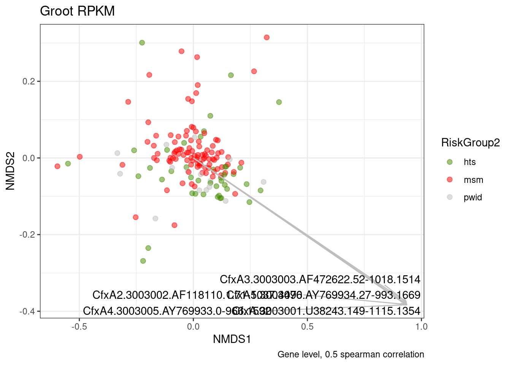
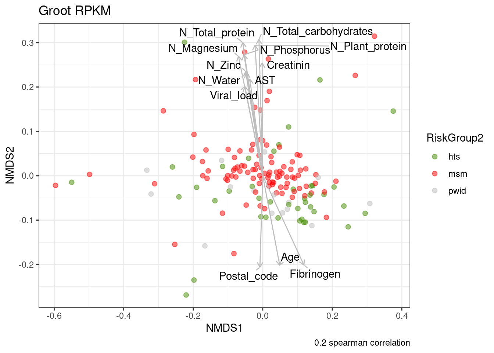

06_biplot
Elisa Rubio
2022-08-21
Last updated: 2022-08-23
Checks: 6 1
Knit directory: 2022_Rubio_MetaHIV/
This reproducible R Markdown analysis was created with workflowr (version 1.7.0). The Checks tab describes the reproducibility checks that were applied when the results were created. The Past versions tab lists the development history.
The R Markdown file has unstaged changes. To know which version of
the R Markdown file created these results, you’ll want to first commit
it to the Git repo. If you’re still working on the analysis, you can
ignore this warning. When you’re finished, you can run
wflow_publish to commit the R Markdown file and build the
HTML.
Great job! The global environment was empty. Objects defined in the global environment can affect the analysis in your R Markdown file in unknown ways. For reproduciblity it’s best to always run the code in an empty environment.
The command set.seed(20220202) was run prior to running
the code in the R Markdown file. Setting a seed ensures that any results
that rely on randomness, e.g. subsampling or permutations, are
reproducible.
Great job! Recording the operating system, R version, and package versions is critical for reproducibility.
Nice! There were no cached chunks for this analysis, so you can be confident that you successfully produced the results during this run.
Great job! Using relative paths to the files within your workflowr project makes it easier to run your code on other machines.
Great! You are using Git for version control. Tracking code development and connecting the code version to the results is critical for reproducibility.
The results in this page were generated with repository version 6756361. See the Past versions tab to see a history of the changes made to the R Markdown and HTML files.
Note that you need to be careful to ensure that all relevant files for
the analysis have been committed to Git prior to generating the results
(you can use wflow_publish or
wflow_git_commit). workflowr only checks the R Markdown
file, but you know if there are other scripts or data files that it
depends on. Below is the status of the Git repository when the results
were generated:
Ignored files:
Ignored: .Rhistory
Ignored: .Rproj.user/
Ignored: analysis/figure/
Ignored: output/aribaData/
Ignored: output/grootData/
Unstaged changes:
Modified: analysis/06_biplot.Rmd
Note that any generated files, e.g. HTML, png, CSS, etc., are not included in this status report because it is ok for generated content to have uncommitted changes.
These are the previous versions of the repository in which changes were
made to the R Markdown (analysis/06_biplot.Rmd) and HTML
(docs/06_biplot.html) files. If you’ve configured a remote
Git repository (see ?wflow_git_remote), click on the
hyperlinks in the table below to view the files as they were in that
past version.
| File | Version | Author | Date | Message |
|---|---|---|---|---|
| Rmd | 9020ce6 | Elisa | 2022-08-22 | biplot 220822 |
| Rmd | c5f0d18 | Elisa | 2022-08-21 | biplot test |
library(tidyverse)
library(vegan)
library(broom)
library(ggrepel)
library(glue)
library(usedist)load("output/ariba_dist.RDA")
load("output/groot_dist.RDA")
load("output/summarized_ariba.RDA")
load("output/summarized_groot.RDA")
load("output/rarefied_ariba.RDA")
load("output/rarefied2500_groot.RDA")
metadata<-read_csv("data/Metadata/metadata.csv")Correlations of AMR genes with NMDs axes:
biplot_amr<-function(data, metadata, clin_var, cor_level){
clin_var<-enquo(clin_var)
dist<-vegdist(t(data[ ,-1]), method = "bray"); dist<- dist_setNames(dist, colnames(data)[-1])
set.seed(200889)
nmds <- metaMDS(dist)
##nmds_positions<-scores(nmds)%>%as_tibble(rownames="SampleID")
nmds_positions<- nmds$points %>%
as_tibble(rownames="SampleID")%>%
rename(NMDS1=MDS1, NMDS2=MDS2)
ref_name<-pull(data, ref_name)
data<-as_tibble(cbind(SampleID = names(data), t(data)))%>%slice(-1)
colnames(data)<-c("SampleID", ref_name)
data<-data%>%pivot_longer(-SampleID)
nmds_shared <- inner_join(data, nmds_positions)%>%mutate(value=as.numeric(value))
cor_x <- nmds_shared %>%
nest(data = -name) %>%
mutate(cor_x = map(data,
~cor.test(.x$value, .x$NMDS1,
method="spearman",
exact=FALSE) %>% tidy())) %>%
unnest(cor_x) %>%
select(name, estimate, p.value)
cor_y <- nmds_shared %>%
nest(data = -name) %>%
mutate(cor_y = map(data,
~cor.test(.x$value, .x$NMDS2,
method="spearman",
exact=FALSE) %>% tidy())) %>%
unnest(cor_y) %>%
select(name, estimate, p.value)
correlations <- inner_join(cor_x, cor_y, by="name")
high_corr <- correlations %>%
filter(estimate.x<=0.05 | estimate.y<=0.05)%>%
filter(abs(estimate.x) > cor_level | abs(estimate.y) > cor_level)
nmds_positions%>%
left_join(., metadata, by="SampleID") %>%
ggplot(aes(x=NMDS1, y=NMDS2, color=!!clin_var)) +
geom_point(alpha=0.5, size=2)+
geom_segment(data=high_corr,
aes(x=0, xend=estimate.x, y=0, yend=estimate.y),
arrow = arrow(length = unit(0.2, "cm")), alpha=1,colour="gray",
inherit.aes=FALSE)+
geom_text_repel(data=high_corr,
aes(x=estimate.x, y=estimate.y, label=name),
min.segment.length = 0.15, segment.alpha=1, segment.color="gray",
inherit.aes=FALSE) +
theme_bw()+
scale_color_manual(values = c("chartreuse4", "red", "gray"))+
labs(caption = glue("Gene level, {cor_level} spearman correlation"))}Correlations of numerical metadata variables with NMDS axes
biplot_meta<-function(data, metadata, clin_var, cor_level){
clin_var<-enquo(clin_var)
dist<-vegdist(t(data[ ,-1]), method = "bray"); dist<- dist_setNames(dist, colnames(data)[-1])
set.seed(200889)
nmds <- metaMDS(dist)
##nmds_positions<-scores(nmds)%>%as_tibble(rownames="SampleID")
nmds_positions<- nmds$points %>%
as_tibble(rownames="SampleID")%>%
rename(NMDS1=MDS1, NMDS2=MDS2)
meta<-metadata%>%select(SampleID, where(is.numeric))%>%
pivot_longer(-SampleID, values_drop_na = TRUE)
nmds_shared <- inner_join(nmds_positions, meta)%>%mutate(value=as.numeric(value))
cor_x <- nmds_shared %>%
nest(data = -name) %>%
mutate(cor_x = map(data,
~cor.test(.x$value, .x$NMDS1,
method="spearman",
exact=FALSE) %>% tidy())) %>%
unnest(cor_x) %>%
select(name, estimate, p.value)
cor_y <- nmds_shared %>%
nest(data = -name) %>%
mutate(cor_y = map(data,
~cor.test(.x$value, .x$NMDS2,
method="spearman",
exact=FALSE) %>% tidy())) %>%
unnest(cor_y) %>%
select(name, estimate, p.value)
correlations <- inner_join(cor_x, cor_y, by="name")
high_corr <- correlations %>%
filter(estimate.x<=0.01 | estimate.y<=0.01)%>%
filter(abs(estimate.x) > cor_level | abs(estimate.y) > cor_level)
if (nrow(high_corr)==0){stop("No significant correlations")
} else {
nmds_positions%>%
left_join(., metadata, by="SampleID") %>%
ggplot(aes(x=NMDS1, y=NMDS2, color=!!clin_var)) +
geom_point(alpha=0.5, size=2)+
geom_segment(data=high_corr,
aes(x=0, xend=estimate.x, y=0, yend=estimate.y),
arrow = arrow(length = unit(0.2, "cm")), alpha=1,colour="gray",
inherit.aes=FALSE)+
geom_text_repel(data=high_corr,
aes(x=estimate.x, y=estimate.y, label=name),
min.segment.length = 0.15, segment.alpha=1, segment.color="gray",
inherit.aes=FALSE) +
theme_bw()+
scale_color_manual(values = c("chartreuse4", "red", "gray"))+
labs(caption = glue("{cor_level} spearman correlation"))}
}ARIBA
biplot_amr(ariba_rar, metadata, RiskGroup2, 0.5)+labs(title = "Ariba Rarefied counts")Run 0 stress 0.2619139
Run 1 stress 0.2630689
Run 2 stress 0.2623743
... Procrustes: rmse 0.01727915 max resid 0.109121
Run 3 stress 0.2617397
... New best solution
... Procrustes: rmse 0.02405941 max resid 0.2271366
Run 4 stress 0.2658973
Run 5 stress 0.2660067
Run 6 stress 0.2619111
... Procrustes: rmse 0.0172414 max resid 0.2050288
Run 7 stress 0.2666935
Run 8 stress 0.2637621
Run 9 stress 0.2715775
Run 10 stress 0.2637698
Run 11 stress 0.2670776
Run 12 stress 0.2640943
Run 13 stress 0.2634628
Run 14 stress 0.2665091
Run 15 stress 0.2660558
Run 16 stress 0.2630005
Run 17 stress 0.2655312
Run 18 stress 0.2642922
Run 19 stress 0.2641465
Run 20 stress 0.2687306
*** No convergence -- monoMDS stopping criteria:
4: no. of iterations >= maxit
16: stress ratio > sratmax
biplot_meta(ariba_rar, metadata, RiskGroup2, 0.2)+labs(title = "Ariba Rarefied counts")Run 0 stress 0.2619139
Run 1 stress 0.2630689
Run 2 stress 0.2623743
... Procrustes: rmse 0.01727915 max resid 0.109121
Run 3 stress 0.2617397
... New best solution
... Procrustes: rmse 0.02405941 max resid 0.2271366
Run 4 stress 0.2658973
Run 5 stress 0.2660067
Run 6 stress 0.2619111
... Procrustes: rmse 0.0172414 max resid 0.2050288
Run 7 stress 0.2666935
Run 8 stress 0.2637621
Run 9 stress 0.2715775
Run 10 stress 0.2637698
Run 11 stress 0.2670776
Run 12 stress 0.2640943
Run 13 stress 0.2634628
Run 14 stress 0.2665091
Run 15 stress 0.2660558
Run 16 stress 0.2630005
Run 17 stress 0.2655312
Run 18 stress 0.2642922
Run 19 stress 0.2641465
Run 20 stress 0.2687306
*** No convergence -- monoMDS stopping criteria:
4: no. of iterations >= maxit
16: stress ratio > sratmax
biplot_amr(ariba_rpkm, metadata, RiskGroup2, 0.5)+labs(title = "Ariba RPKM")Run 0 stress 0.2486242
Run 1 stress 0.2486689
... Procrustes: rmse 0.002925312 max resid 0.03230969
Run 2 stress 0.2496518
Run 3 stress 0.2486503
... Procrustes: rmse 0.002718464 max resid 0.03223658
Run 4 stress 0.2488234
... Procrustes: rmse 0.007291962 max resid 0.07156253
Run 5 stress 0.2487869
... Procrustes: rmse 0.006795064 max resid 0.07183843
Run 6 stress 0.2524771
Run 7 stress 0.2488573
... Procrustes: rmse 0.006485758 max resid 0.07181188
Run 8 stress 0.249641
Run 9 stress 0.2498946
Run 10 stress 0.2488563
... Procrustes: rmse 0.007030834 max resid 0.07164504
Run 11 stress 0.2496531
Run 12 stress 0.2486444
... Procrustes: rmse 0.00108442 max resid 0.01049109
Run 13 stress 0.2486166
... New best solution
... Procrustes: rmse 0.001826592 max resid 0.01580941
Run 14 stress 0.2516208
Run 15 stress 0.2486463
... Procrustes: rmse 0.002707593 max resid 0.03221828
Run 16 stress 0.2495862
Run 17 stress 0.2496288
Run 18 stress 0.2496519
Run 19 stress 0.2496403
Run 20 stress 0.2496276
*** No convergence -- monoMDS stopping criteria:
1: no. of iterations >= maxit
19: stress ratio > sratmax
biplot_meta(ariba_rpkm, metadata, RiskGroup2, 0.2)+labs(title = "Ariba RPKM")Run 0 stress 0.2486242
Run 1 stress 0.2486689
... Procrustes: rmse 0.002925312 max resid 0.03230969
Run 2 stress 0.2496518
Run 3 stress 0.2486503
... Procrustes: rmse 0.002718464 max resid 0.03223658
Run 4 stress 0.2488234
... Procrustes: rmse 0.007291962 max resid 0.07156253
Run 5 stress 0.2487869
... Procrustes: rmse 0.006795064 max resid 0.07183843
Run 6 stress 0.2524771
Run 7 stress 0.2488573
... Procrustes: rmse 0.006485758 max resid 0.07181188
Run 8 stress 0.249641
Run 9 stress 0.2498946
Run 10 stress 0.2488563
... Procrustes: rmse 0.007030834 max resid 0.07164504
Run 11 stress 0.2496531
Run 12 stress 0.2486444
... Procrustes: rmse 0.00108442 max resid 0.01049109
Run 13 stress 0.2486166
... New best solution
... Procrustes: rmse 0.001826592 max resid 0.01580941
Run 14 stress 0.2516208
Run 15 stress 0.2486463
... Procrustes: rmse 0.002707593 max resid 0.03221828
Run 16 stress 0.2495862
Run 17 stress 0.2496288
Run 18 stress 0.2496519
Run 19 stress 0.2496403
Run 20 stress 0.2496276
*** No convergence -- monoMDS stopping criteria:
1: no. of iterations >= maxit
19: stress ratio > sratmax
Groot
biplot_amr(groot_rar, metadata, RiskGroup2, 0.5)+labs(title = "Groot Rarefied counts")Run 0 stress 0.1803599
Run 1 stress 0.1788383
... New best solution
... Procrustes: rmse 0.03873502 max resid 0.2398207
Run 2 stress 0.179452
Run 3 stress 0.1824486
Run 4 stress 0.188978
Run 5 stress 0.18197
Run 6 stress 0.1901835
Run 7 stress 0.1833
Run 8 stress 0.1776509
... New best solution
... Procrustes: rmse 0.03414292 max resid 0.2442929
Run 9 stress 0.1740271
... New best solution
... Procrustes: rmse 0.02613701 max resid 0.1594867
Run 10 stress 0.1837995
Run 11 stress 0.1816011
Run 12 stress 0.1746082
Run 13 stress 0.1784326
Run 14 stress 0.1745717
Run 15 stress 0.1806955
Run 16 stress 0.1771005
Run 17 stress 0.1841789
Run 18 stress 0.1793796
Run 19 stress 0.1800953
Run 20 stress 0.1875857
*** No convergence -- monoMDS stopping criteria:
2: no. of iterations >= maxit
18: stress ratio > sratmax
##biplot_meta(groot_rar, metadata, RiskGroup2, 0.2)+labs(title = "Groot Rarefied counts")biplot_amr(groot_rpkm, metadata, RiskGroup2, 0.5)+labs(title = "Groot RPKM")Run 0 stress 0.1588664
Run 1 stress 0.1642337
Run 2 stress 0.1636576
Run 3 stress 0.1682236
Run 4 stress 0.156548
... New best solution
... Procrustes: rmse 0.04547659 max resid 0.2324753
Run 5 stress 0.1657083
Run 6 stress 0.162819
Run 7 stress 0.1574414
Run 8 stress 0.1603271
Run 9 stress 0.151538
... New best solution
... Procrustes: rmse 0.03955989 max resid 0.2202202
Run 10 stress 0.1557259
Run 11 stress 0.1629994
Run 12 stress 0.1582707
Run 13 stress 0.1536591
Run 14 stress 0.1497357
... New best solution
... Procrustes: rmse 0.04236057 max resid 0.2398044
Run 15 stress 0.1589346
Run 16 stress 0.1555004
Run 17 stress 0.1551458
Run 18 stress 0.161488
Run 19 stress 0.1491921
... New best solution
... Procrustes: rmse 0.02279961 max resid 0.2281182
Run 20 stress 0.1605846
*** No convergence -- monoMDS stopping criteria:
1: no. of iterations >= maxit
19: stress ratio > sratmax
biplot_meta(groot_rpkm, metadata, RiskGroup2, 0.2)+labs(title = "Groot RPKM")Run 0 stress 0.1588664
Run 1 stress 0.1642337
Run 2 stress 0.1636576
Run 3 stress 0.1682236
Run 4 stress 0.156548
... New best solution
... Procrustes: rmse 0.04547659 max resid 0.2324753
Run 5 stress 0.1657083
Run 6 stress 0.162819
Run 7 stress 0.1574414
Run 8 stress 0.1603271
Run 9 stress 0.151538
... New best solution
... Procrustes: rmse 0.03955989 max resid 0.2202202
Run 10 stress 0.1557259
Run 11 stress 0.1629994
Run 12 stress 0.1582707
Run 13 stress 0.1536591
Run 14 stress 0.1497357
... New best solution
... Procrustes: rmse 0.04236057 max resid 0.2398044
Run 15 stress 0.1589346
Run 16 stress 0.1555004
Run 17 stress 0.1551458
Run 18 stress 0.161488
Run 19 stress 0.1491921
... New best solution
... Procrustes: rmse 0.02279961 max resid 0.2281182
Run 20 stress 0.1605846
*** No convergence -- monoMDS stopping criteria:
1: no. of iterations >= maxit
19: stress ratio > sratmax
sessionInfo()R version 4.1.2 (2021-11-01)
Platform: x86_64-pc-linux-gnu (64-bit)
Running under: Ubuntu 22.04 LTS
Matrix products: default
BLAS: /usr/lib/x86_64-linux-gnu/blas/libblas.so.3.10.0
LAPACK: /usr/lib/x86_64-linux-gnu/lapack/liblapack.so.3.10.0
locale:
[1] LC_CTYPE=es_ES.UTF-8 LC_NUMERIC=C
[3] LC_TIME=es_ES.UTF-8 LC_COLLATE=es_ES.UTF-8
[5] LC_MONETARY=es_ES.UTF-8 LC_MESSAGES=es_ES.UTF-8
[7] LC_PAPER=es_ES.UTF-8 LC_NAME=C
[9] LC_ADDRESS=C LC_TELEPHONE=C
[11] LC_MEASUREMENT=es_ES.UTF-8 LC_IDENTIFICATION=C
attached base packages:
[1] stats graphics grDevices utils datasets methods base
other attached packages:
[1] usedist_0.4.0 glue_1.6.2 ggrepel_0.9.1 broom_1.0.0
[5] vegan_2.6-2 lattice_0.20-45 permute_0.9-7 forcats_0.5.1
[9] stringr_1.4.0 dplyr_1.0.9 purrr_0.3.4 readr_2.1.2
[13] tidyr_1.2.0 tibble_3.1.8 ggplot2_3.3.6 tidyverse_1.3.2
loaded via a namespace (and not attached):
[1] nlme_3.1-155 fs_1.5.2 lubridate_1.8.0
[4] bit64_4.0.5 httr_1.4.3 rprojroot_2.0.3
[7] tools_4.1.2 backports_1.4.1 bslib_0.4.0
[10] utf8_1.2.2 R6_2.5.1 DBI_1.1.3
[13] mgcv_1.8-39 colorspace_2.0-3 withr_2.5.0
[16] tidyselect_1.1.2 bit_4.0.4 compiler_4.1.2
[19] git2r_0.30.1 cli_3.3.0 rvest_1.0.2
[22] xml2_1.3.3 labeling_0.4.2 sass_0.4.2
[25] scales_1.2.0 digest_0.6.29 rmarkdown_2.14
[28] pkgconfig_2.0.3 htmltools_0.5.3 highr_0.9
[31] dbplyr_2.2.1 fastmap_1.1.0 rlang_1.0.4
[34] readxl_1.4.0 rstudioapi_0.13 farver_2.1.1
[37] jquerylib_0.1.4 generics_0.1.3 jsonlite_1.8.0
[40] vroom_1.5.7 googlesheets4_1.0.0 magrittr_2.0.3
[43] Matrix_1.4-0 Rcpp_1.0.9 munsell_0.5.0
[46] fansi_1.0.3 lifecycle_1.0.1 stringi_1.7.8
[49] whisker_0.4 yaml_2.3.5 MASS_7.3-55
[52] grid_4.1.2 parallel_4.1.2 promises_1.2.0.1
[55] crayon_1.5.1 haven_2.5.0 splines_4.1.2
[58] hms_1.1.1 knitr_1.39 pillar_1.8.0
[61] reprex_2.0.1 evaluate_0.15 modelr_0.1.8
[64] vctrs_0.4.1 tzdb_0.3.0 httpuv_1.6.5
[67] cellranger_1.1.0 gtable_0.3.0 assertthat_0.2.1
[70] cachem_1.0.6 xfun_0.31 later_1.3.0
[73] googledrive_2.0.0 gargle_1.2.0 workflowr_1.7.0
[76] cluster_2.1.2 ellipsis_0.3.2